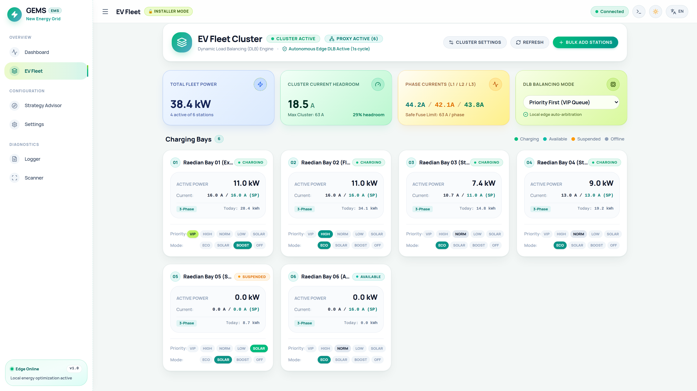
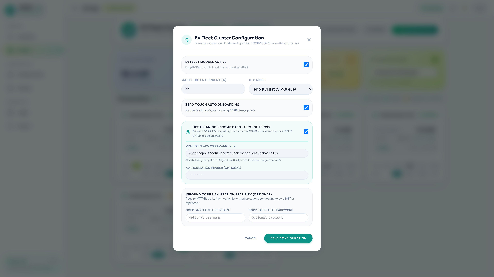

Cluster de Flotte VE GEMS &
Dynamic Load Balancing (DLB)

Présentation du Manuel & Sommaire
Ce manuel technique de terrain s'adresse aux électriciens agréés, installateurs tertiaires et industriels, opérateurs de points de charge (CPO) et gestionnaires de sites. Il détaille l'architecture, les règles électrotechniques, le paramétrage logiciel, le proxy OCPP straight-through et les procédures de diagnostic du système Cluster de Flotte VE & Dynamic Load Balancing (DLB) Autonome GEMS.
| Section | Sujet | Public Cible |
|---|---|---|
| Section 1 | Fondations Architecturales & Topologie des Communications | Ingénieurs Système, Bureaux d'Études Électriques |
| Section 2 | Génie Électrique, Protection des Disjoncteurs & Normes | Électriciens Agréés, Ingénieurs de Mise en Service |
| Section 3 | Moteur Dynamic Load Balancing (DLB) & Modes d'Exploitation | Gestionnaires d'Énergie, Exploitants Système |
| Section 4 | Proxy OCPP Intelligent Straight-Through (Pass-Through) | Gestionnaires de Flotte, Intégrateurs CPO |
| Section 5 | Auto-Intégration Zero-Touch & Provisionnement Raedian | Techniciens Terrain, Installateurs |
| Section 6 | Interface Cockpit Flotte & Commandes par Emplacement | Facility Managers, Coordinateurs de Parc |
| Section 7 | Mise en Service Terrain, Vérification & Essai de Surcharge | Chefs de Chantier Électriciens |
| Section 8 | Dépannage, Diagnostics & Codes de Sécurité | Ingénieurs Support Terrain, Techniciens SAV |
Section 1 : Fondations Architecturales & Topologie Système
1.1 Clustering Multi-Bornes sur Raspberry Pi
GEMS transforme un Raspberry Pi 4 ou Raspberry Pi 5 standard en un contrôleur industriel de parc de recharge multi-emplacements. Un seul nœud edge GEMS orchestre jusqu'à 32 bornes de recharge (extensible à 64 emplacements sur Raspberry Pi 5) sous une enveloppe électrique globale rigoureusement maîtrisée.
Le contrôleur de cluster mesure en temps réel la consommation totale du site via un compteur communicant (télégramme P1 ou compteur d'énergie Modbus), détermine instantanément le talon de consommation hors recharge, et répartit dynamiquement toute la capacité électrique restante entre les emplacements actifs.
1.2 Soustraction de la Charge de Fond & Répartition par Phase
Toute installation électrique comporte des charges de fond non liées aux véhicules électriques : pompes à chaleur, climatisation, éclairage tertiaire, cuisines professionnelles ou machines industrielles. GEMS soustrait ces charges en temps réel phase par phase afin que la flotte VE puisse exploiter chaque ampère disponible sans jamais dépasser le calibre du disjoncteur de tête.
1.3 Protocoles de Communication Pris en Charge
GEMS prend en charge une architecture de communication hybride et flexible sur l'ensemble des bornes du cluster :
- OCPP 1.6-J (JSON sur WebSockets) : Serveur natif à l'écoute sur le port dédié
8887(ws://<gems-ip>:8887/{chargePointId}) ainsi que sur le port reverse-proxy8080(ws://<gems-ip>:8080/api/ocpp/{chargePointId}). Prise en charge complète des profils de charge (y compris la mise en pause de sécurité à0.0 A), des relevés de compteur, de l'authentification HTTP Basic optionnelle et du relais proxy transparent vers un CPO externe. - Modbus TCP / RTU : Lecture et écriture directe des registres de consigne de courant (holding registers) pour les bornes industrielles telles que Raedian Modbus, Alfen Eve ou les contrôleurs Phoenix Contact.
Section 2 : Génie Électrique, Protection des Disjoncteurs & Normes
2.1 Protection Temps Réel du Disjoncteur & Allocation par Phase
Afin d'éviter tout déclenchement thermique du disjoncteur général tout en maximisant la puissance délivrée aux véhicules triphasés comme aux véhicules monophasés répartis par rotation de phases, GEMS évalue en continu l'appel de courant du bâtiment et du départ parking sur les phases L1, L2 et L3 :
- Marge de Sécurité du Disjoncteur Principal : Maintient une garde de sécurité sous le calibre nominal physique (
PhaseLimitAmps) sur chaque phase individuelle (L1,L2,L3). - Isolation de la Charge de Fond du Bâtiment : Soustrait par phase les consommations actives hors VE (CVC, ascenseurs, éclairage, pompes à chaleur) afin de déterminer la marge réseau réellement disponible.
- Plafonnement du Tableau Divisionnaire : Limite le courant global du parking au calibre du départ dédié (
FleetMaxCurrentA), tout en permettant à des véhicules monophasés raccordés sur des phases distinctes d'exploiter simultanément la réserve propre à chaque phase. - Valorisation du Surplus Photovoltaïque : Ajoute dynamiquement la réserve d'injection solaire produite en aval du compteur (telle qu'une centrale de toiture Solis) aux bornes éco et solaires éligibles (telles que les wallbox Raedian).
| Nom de la Variable | Valeur par Défaut | Fonction Électrotechnique & Description |
|---|---|---|
PhaseLimitAmps |
40.0 A | Calibre nominal du disjoncteur général par phase. Configuré dans les Paramètres du site. |
SafeLimitA |
36.0 A (0.90x) | Seuil continu de sécurité. La marge de 10 % absorbe les pointes d'appel inductives au démarrage. |
FleetMaxCurrentA |
32.0 A | Plafond global d'intensité du tableau divisionnaire VE. Limite le courant simultané total sur l'ensemble des bornes. |
MinStationAmps |
6.0 A | Courant minimal réglementaire défini par la norme IEC 61851-1. Aucune consigne inférieure à 6 A ne peut être envoyée à un VE. |
PhaseMultiplier |
1.0 ou 3.0 | Facteur lié au raccordement monophasé (230 V) ou triphasé (400 V étoile) du véhicule en charge. |
2.2 Conformité IEC 61851-1 & Garde-Fous de Délestage
La norme internationale IEC 61851-1 impose que le rapport cyclique PWM du signal Control Pilot (CP) corresponde au minimum à 6,0 ampères (env. 10 % de rapport cyclique) pour autoriser ou maintenir la charge d'un véhicule électrique. Une borne ne peut ni légalement ni techniquement commander 2 A, 3 A ou 5 A.
6,0 A × Nombre de Bornes Actives, l'algorithme GEMS ne bride jamais une borne sous 6,0 A, ce qui mettrait en défaut le chargeur embarqué du véhicule. À la place, GEMS suspend intelligemment les emplacements de plus faible priorité (consigne pilote à 0 A) tout en maintenant 6 A ou plus sur les bornes prioritaires restantes.
2.3 Déséquilibre de Phases & Défense contre les Charges Asymétriques
Dans les parcs mixtes, certains véhicules chargent en monophasé (tirant jusqu'à 16 A ou 32 A sur la seule phase L1) tandis que d'autres chargent en triphasé (L1, L2, L3). Sans supervision par phase, la phase L1 peut rapidement entrer en surcharge et faire sauter le disjoncteur général alors que L2 et L3 restent sous-chargées.
À chaque seconde, GEMS évalue MaxPhaseA = max(L1_A, L2_A, L3_A) à partir du compteur intelligent. La phase la plus sollicitée dicte la marge disponible, garantissant qu'aucune phase individuelle ne franchit jamais la courbe thermique du disjoncteur.
Section 3 : Moteur Dynamic Load Balancing (DLB) & Modes
GEMS propose trois stratégies d'exploitation distinctes adaptées aux garages résidentiels multi-véhicules, aux flottes d'entreprise, aux parkings visiteurs et aux bâtiments tertiaires fortement équipés en photovoltaïque.
3.1 Mode 1 : Equal Share (Répartition Équitable)
Objectif : Traiter tous les véhicules connectés sur un pied d'égalité. Idéal pour les parkings publics, copropriétés ou parkings collaborateurs où chacun partage proportionnellement la puissance disponible.
- Calcule
ShareA = AvailableClusterA / ActiveStations. - En présence d'un surplus solaire local, les ampères photovoltaïques sont répartis équitablement en sus de la marge réseau.
- Protection par Délestage Automatique : Si
ShareA < 6,0 A, GEMS calculeMaxSupported = floor(AvailableClusterA / 6,0 A). Il alloue le courant disponible aux premières bornes MaxSupported et met proprement en veille les bornes excédentaires jusqu'au retour d'une marge suffisante.
3.2 Mode 2 : Priority Queue (File Prioritaire VIP)
Objectif : Garantir une recharge rapide aux véhicules critiques (fourgons de livraison, véhicules d'astreinte, direction) tandis que les véhicules secondaires récupèrent la capacité restante.
À chaque cycle, GEMS trie l'ensemble des bornes actives selon leur niveau de priorité :
| Niveau | Poids | Comportement d'Allocation | Cas d'Usage Terrain Typique |
|---|---|---|---|
| VIP | Rang 5 (Max) | Reçoit en premier son intensité nominale maximale. Jamais délesté sauf risque immédiat pour la protection générale du bâtiment. | Utilitaires en tournée tendue, médecin de garde, emplacement direction. |
| HIGH | Rang 4 | Alimenté immédiatement après satisfaction complète des emplacements VIP. | Commerciaux itinérants, véhicules de pool réservés. |
| NORMAL | Rang 3 | Partage équitablement la réserve restante entre emplacements normaux. Bridé ou mis en pause lors des pointes du bâtiment. | Stationnement collaborateurs standard, bornes visiteurs, recharge résidentielle de nuit. |
| LOW | Rang 2 | Cède le pas aux emplacements Normaux en cas de contrainte réseau, tout en restant autorisé à charger sur le réseau et en heures creuses. | Véhicules de service sans urgence, stationnement prolongé ou charge nocturne non prioritaire. |
| SOLAR ONLY | Rang 1 (Min) | 0 A prélevé sur le réseau. Fonctionne strictement lorsque l'injection PV dépasse 1 400 W. | Véhicules secondaires, stationnement longue durée hôtelier ou aéroportuaire. |
3.3 Mode 3 : Solar First (Valorisation du Surplus PV)
Objectif : Maximiser l'autoconsommation de la toiture photovoltaïque et supprimer les coûts d'achat réseau.
- GEMS scrute en direct l'injection mesurée par le compteur P1/Modbus. Dès que l'export dépasse 1 400 Watts (seuil minimal de 6 A en monophasé), le moteur DLB distribue le courant solaire excédentaire aux bornes actives.
- Lorsque l'ensoleillement augmente, l'intensité grimpe instantanément. Si l'excédent retombe sous 1 400 W, les bornes non-VIP sont mises en pause.
- Dérogation VIP : Les emplacements affectés à la Priorité VIP conservent un accès intégral au réseau même en mode Solar First, garantissant la disponibilité des véhicules critiques quelle que soit la météo.
Section 4 : Proxy OCPP Intelligent Straight-Through
4.1 Le Défi d'Intégration en Recharge Tertiaire & Flotte d'Entreprise
La majorité des flottes commerciales et véhicules de société exigent une identification par badge RFID afin d'assurer le remboursement des frais de charge au collaborateur ou la refacturation via une plateforme CPO externe. Or, ces plateformes cloud externes sont totalement aveugles aux appels de puissance locaux du bâtiment : elles ignorent l'enclenchement des pompes à chaleur ou une chute de production solaire. Si le CPO externe ordonne une charge à pleine puissance, le disjoncteur général du site déclenche.
4.2 La Solution Transparente GEMS
GEMS résout ce conflit grâce à son Proxy OCPP Intelligent Straight-Through :
- La borne physique pointe son URL WebSocket directement vers GEMS sur le réseau local (LAN).
- GEMS établit un tunnel WebSocket amont chiffré et transparent vers la plateforme de facturation CPO externe (ex.
wss://cpo.thechargegrid.com/ocpp/{chargePointId}). - Les demandes d'autorisation RFID, les transactions de facturation (
StartTransaction,StopTransaction) et les index énergétiques sont relayés de façon transparente vers l'amont. - Arbitrage Autonome des Profils DLB : Lorsque le CPO externe transmet une consigne
SetChargingProfile, GEMS inspecte la trame à la volée. Si le CPO autorise 32 A alors que le bâtiment ne dispose plus que de 16 A de réserve, GEMS plafonne la limite à 16 A avant de la transmettre à la borne. - Immunité aux Pannes Internet : En cas de coupure d'accès Internet du bâtiment ou d'indisponibilité du serveur CPO externe, GEMS poursuit sans aucune interruption l'équilibrage électrique local.
4.3 Configurer le Proxy Straight-Through dans GEMS
Ouvrez Cluster de Flotte VE (Flotte EV) sur le tableau de bord GEMS puis cliquez sur Paramètres du cluster (Cluster Settings) :
- Activez l'option Proxy Pass-Through OCPP CSMS Amont (Straight-Through OCPP Smart Forwarder).
- Renseignez l'URL WebSocket CPO Amont. Utilisez le jeton dynamique
{chargePointId}que GEMS remplace automatiquement par l'identifiant unique de chaque borne :wss://cpo.thechargegrid.com/ocpp/{chargePointId} - Saisissez un En-tête d'Autorisation (Authorization Header) facultatif si la plateforme amont l'exige :
Bearer eyJhbGciOiJIUzI1NiIsInR5cCI6IkpXVCJ9...
- Cliquez sur Enregistrer (Save Configuration). GEMS connecte l'ensemble des bornes provisionnées à la plateforme amont en moins de 5 secondes.

Section 5 : Auto-Intégration Zero-Touch & Provisionnement Raedian
5.1 Fonctionnement de l'Auto-Intégration Zero-Touch
GEMS supprime la saisie manuelle fastidieuse lors du déploiement d'un parc de bornes. Lorsque l'option Zero-Touch Auto-Onboarding est activée dans les Paramètres du cluster :
- L'installateur met sous tension une nouvelle borne raccordée au réseau local (LAN).
- La borne est configurée pour pointer son URL de système central vers GEMS (
ws://<IP_GEMS>:8080/api/ocpp/NUM_SERIE). - La borne émet une trame OCPP initiale
BootNotificationindiquant son fabricant et son modèle. - GEMS identifie le constructeur : s'il s'agit d'une borne Raedian, le modèle matériel
raedian_geminilui est automatiquement associé. - GEMS lui attribue automatiquement le prochain numéro d'emplacement libre (ex.
Bay 07), configure un calibre par défaut de 16 A en modeecoavec prioriténormalet démarre immédiatement la supervision en direct.
5.2 Assistant d'Ajout Groupé de Bornes
Pour les chantiers comprenant de 4 à 32 bornes installées simultanément, utilisez l'assistant Ajout groupé de bornes (Bulk Add Stations) depuis le Cockpit Flotte VE :
| Champ du Formulaire | Réglage Recommandé | Description |
|---|---|---|
| Préfixe du Nom (Station Name Prefix) | Raedian Bay |
Préfixe attribué à toutes les bornes créées, suivi d'une numérotation séquentielle (01, 02, 03...). |
| Modèle Matériel (Hardware Template) | Raedian (OCPP 1.6-J / Modbus) |
Modèle de pilote recommandé prenant en charge la modulation dynamique d'intensité et la détection des phases. |
| Nombre de Bornes (Number of Stations) | ex. 8 |
Nombre d'emplacements de charge à générer et provisionner en une seule opération. |
| Port / ID Modbus de Départ | 8887 (ou 1 en Modbus) |
Port de base ou identifiant esclave Modbus incrémenté automatiquement pour chaque emplacement suivant. |
| Courant Max par Borne (Max Station Current) | 16 A (ou 32 A) |
Calibre individuel du disjoncteur divisionnaire protégeant chaque borne de recharge. |
5.3 Configuration du Matériel de Référence Raedian
Raedian constitue le matériel de référence privilégié pour les clusters de recharge GEMS grâce à la robustesse de sa pile OCPP 1.6-J, la réactivité à la sous-seconde de son interface Modbus TCP et sa coexistence transparente avec les plateformes de facturation CPO externes.

Configurer les Bornes Raedian pour se Connecter à GEMS :
- Connectez un ordinateur portable ou une tablette au Wi-Fi installateur Raedian ou à son portail web d'administration.
- Accédez à la rubrique Network / Central System Settings.
- Réglez Protocol sur
OCPP 1.6-J. - Définissez Server URL / WebSocket Endpoint sur l'une des deux adresses suivantes :
ws://<IP_LOCALE_GEMS>:8887/{chargePointId} ws://<IP_LOCALE_GEMS>:8080/api/ocpp/{chargePointId}(Exemple :ws://192.168.1.150:8887/RD-NEO-08412ouws://192.168.1.150:8080/api/ocpp/RD-NEO-08412) - Désactivez tout délestage autonome interne à la borne afin que GEMS demeure l'unique arbitre centralisé de l'allocation d'ampérage.
- Redémarrez la borne. En moins de 15 secondes, l'emplacement apparaît actif dans le Cockpit Flotte GEMS.
Section 6 : Exploitation du Cockpit Flotte & Commandes par Emplacement
6.1 Vue d'Ensemble du Bandeau d'Indicateurs
Le Cockpit Flotte GEMS (accessible depuis le menu latéral Flotte EV ou à l'adresse /#fleet) offre aux exploitants une visibilité instantanée sur les performances électriques du parc :
- Puissance Totale Flotte (kW) : Puissance active cumulée instantanée appelée par l'ensemble des véhicules en charge.
- Marge de Courant Disponible (A) : Ampères disponibles avant d'atteindre le plafond du cluster ou du disjoncteur général, accompagnés d'une jauge colorée en pourcentage.
- Courants par Phase (L1 / L2 / L3) : Mesure en direct de chaque phase réseau permettant de repérer immédiatement tout déséquilibre.
- Mode d'équilibrage DLB : Sélecteur en direct permettant de basculer instantanément entre Equal Share, Priority First et Solar First sans redémarrer le système.
6.2 Télémétrie & Commandes des Cartes d'Emplacement
Chaque borne provisionnée est représentée par une carte interactive dédiée :
| Élément Visuel | États Possibles | Signification & Action Opérateur |
|---|---|---|
| Badge d'État |
CHARGING AVAILABLE SUSPENDED OFFLINE |
CHARGING : Véhicule branché et en cours de charge. AVAILABLE : Borne prête, aucun câble raccordé. SUSPENDED : Charge mise en pause par le moteur DLB pour protéger le disjoncteur. OFFLINE : Perte de communication avec la borne. |
| Puissance Active (kW) | 0,0 kW à 22,0 kW | Puissance active réelle délivrée au véhicule en temps réel. |
| Courant & Consigne | ex. 10.7 A / 11.0 A (SP) |
Compare le courant réellement appelé à la consigne cible calculée par le moteur DLB. |
| Mode de Phase | 1-Phase ou 3-Phase |
Détecté automatiquement d'après les mesures en direct de tension et de courant par phase. |
| Énergie du Jour | kWh (Cumulatif) | Total des kilowattheures délivrés depuis minuit (00h00). Remise à zéro quotidienne automatique. |
| Boutons de Priorité | VIP | HIGH | NORM | LOW | SOLAR |
Forçage instantané de la priorité de l'emplacement. Permet de promouvoir un véhicule en VIP en un seul clic. |
| Boutons de Mode | Eco | Solar | Boost | Off |
Eco : Suit la politique globale DLB. Solar : Charge strictement limitée au surplus photovoltaïque. Boost : Charge immédiate à la puissance maximale autorisée. Off : Désactive totalement la sortie de la borne. |
VIP de la carte correspondante. GEMS recalcule l'allocation dès la seconde suivante, réduisant les autres emplacements pour affecter la puissance maximale au véhicule prioritaire.
Section 7 : Mise en Service Terrain, Vérification & Essai de Surcharge
7.1 Liste de Contrôle Mécanique & Électrique Avant Mise Sous Tension
- [ ] Vérifier l'adéquation entre le calibre de chaque disjoncteur divisionnaire et la section des conducteurs (minimum 2,5 mm² pour 16 A, 6,0 mm² pour 32 A conformément au RGIE / NF C 15-100 / IEC 60364).
- [ ] Vérifier la cohérence du repérage et du panachage des phases (L1, L2, L3) entre toutes les bornes et le compteur général.
- [ ] Vérifier que le câble P1 ou le compteur d'énergie Modbus RS485 est bien raccordé au Raspberry Pi GEMS et remonte les tensions et courants en direct sur le Tableau de bord.
- [ ] Confirmer que la valeur
PhaseLimitAmpsdans Paramètres → Contrat d'énergie correspond exactement au calibre physique du disjoncteur général en amont.
7.2 Procédure de Mise en Service Pas à Pas
- Démarrer le Nœud Edge GEMS : Assurez-vous que le Raspberry Pi est démarré et que le voyant vert du Tableau de bord GEMS confirme le bon état du système.
- Activer le Cluster Flotte : Accédez à
/#fleet, cliquez sur Paramètres du cluster et cochez l'activation du cluster. Renseignez la limite d'intensité du tableau divisionnaire VE partagé (ex.50 A). - Mettre les Bornes Sous Tension : Alimentez la première borne Raedian. Vérifiez dans le Cockpit Flotte que l'auto-intégration Zero-Touch l'enregistre en tant que
Bay 01. Répétez l'opération pour les bornes suivantes. - Configurer le Proxy Amont (Si requis) : Si la facturation s'effectue via une plateforme CPO externe, saisissez l'URL WebSocket amont et enregistrez. Vérifiez que le badge affiche Proxy Active.
7.3 Essai Réel de Protection Anti-Surcharge
Avant de quitter le chantier, l'électricien chargé de la mise en service doit impérativement réaliser un essai physique de délestage en surcharge :
- Raccordez simultanément des bancs d'essai ou des véhicules électriques sur au moins trois emplacements de charge.
- Observez sur le Cockpit Flotte la montée en courant des trois emplacements (ex. 3 × 16 A = 48 A au total).
- Enclenchez une charge importante dans le bâtiment (ex. appoint électrique de pompe à chaleur, four professionnel ou banc résistif) appelant environ 20 A sur la Phase 1.
- Vérifier la Réaction de GEMS : En 1 à 2 secondes, GEMS doit détecter la baisse de réserve et réduire automatiquement la consigne des bornes (ex. de 16 A vers 10 A ou 8 A) afin de maintenir le prélèvement global sous
PhaseLimitAmps * 0.90. - Coupez la charge du bâtiment : GEMS doit automatiquement remonter la puissance des bornes à leur niveau nominal.
Section 8 : Dépannage, Diagnostics & Codes de Sécurité
8.1 Matrice de Résolution par Symptôme
| Symptôme Observé | Cause Probable | Action Corrective sur Site |
|---|---|---|
| La borne reste à 0 A (Suspended) bien que le câble soit branché. | La marge disponible du cluster est inférieure au seuil minimal réglementaire IEC 61851-1 de 6,0 A. | Vérifiez l'appel de puissance de fond du bâtiment. Contrôlez si FleetMaxCurrentA est réglé trop bas ou si des emplacements VIP monopolisent toute la réserve. |
| La borne plafonne exactement à 6,0 A et refuse d'augmenter. | Le mode est réglé sur Solar First sans injection PV suffisante, ou le chargeur embarqué du véhicule est limité au monophasé. |
Basculez le mode sur Eco ou cliquez sur Boost. Vérifiez la production solaire en direct sur le Tableau de bord principal GEMS. |
| Le Proxy OCPP indique Disconnected / 0 active. | L'URL CPO amont est erronée, le pare-feu bloque le port sortant 443 ou le jeton d'authentification est invalide. | Vérifiez que l'URL amont contient bien {chargePointId}. Testez la connectivité réseau avec curl -I https://... depuis le terminal. |
| Le disjoncteur général déclenche lors de recharges simultanées. | PhaseLimitAmps est configuré au-dessus du calibre réel du disjoncteur, ou la lecture du compteur P1 accuse un retard. |
Abaissez immédiatement PhaseLimitAmps dans les Paramètres. Vérifiez que le câble P1 délivre bien un télégramme chaque seconde. |
| Une nouvelle borne n'est pas auto-intégrée. | L'option Zero-Touch Auto-Onboarding est désactivée, ou la capacité maximale du cluster (32 bornes) est atteinte. | Ouvrez les Paramètres du cluster, cochez Zero-Touch Auto-Onboarding et vérifiez le nombre total de bornes enregistrées. |
8.2 Inspection Diagnostique en Temps Réel via le Journal GEMS
Tous les arbitrages DLB, bridages d'intensité et échanges proxy sont horodatés à la microseconde dans GEMS. Les techniciens peuvent consulter ces flux en direct dans l'interface sous l'onglet Journal (Logger) ou depuis le terminal système :
# Consulter en direct les journaux Flotte & DLB GEMS via systemd :
sudo journalctl -u gems.service -f | grep -E "(Fleet|DLB|OCPP|Proxy)"
# Exemple de sortie lors d'un bridage Dynamic Load Balancing :
[INFO] ⚡ Fleet Auto-Onboarding: Registered new station 'Raedian Bay 04' (Bay 4, CPID: RD-NEO-08412)
[INFO] OCPP Straight-Through Proxy CP RD-NEO-08412 connected to external CPO (subprotocol: ocpp1.6)
[INFO] DLB Safety Arbitration: Capping external CPO limit (32.0 A) to local fuse headroom (13.5 A)
[INFO] Cluster Setpoints Dispatched: Bay 01=16.0A, Bay 02=16.0A, Bay 03=11.0A, Bay 04=13.5A